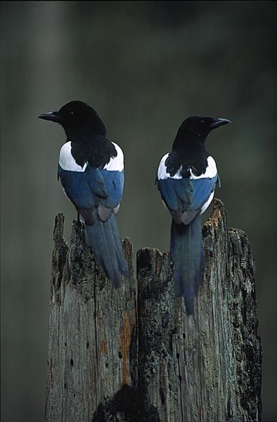
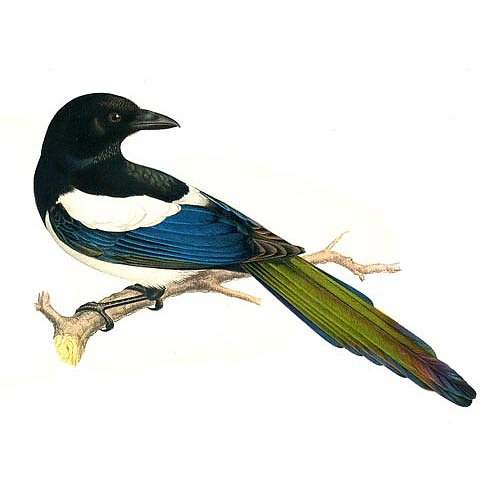
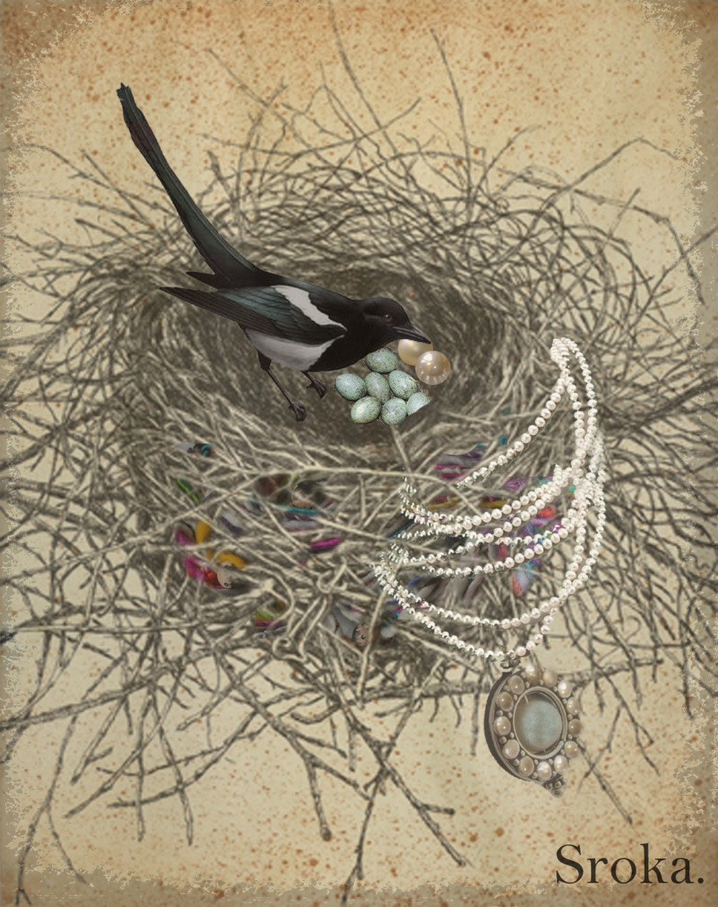
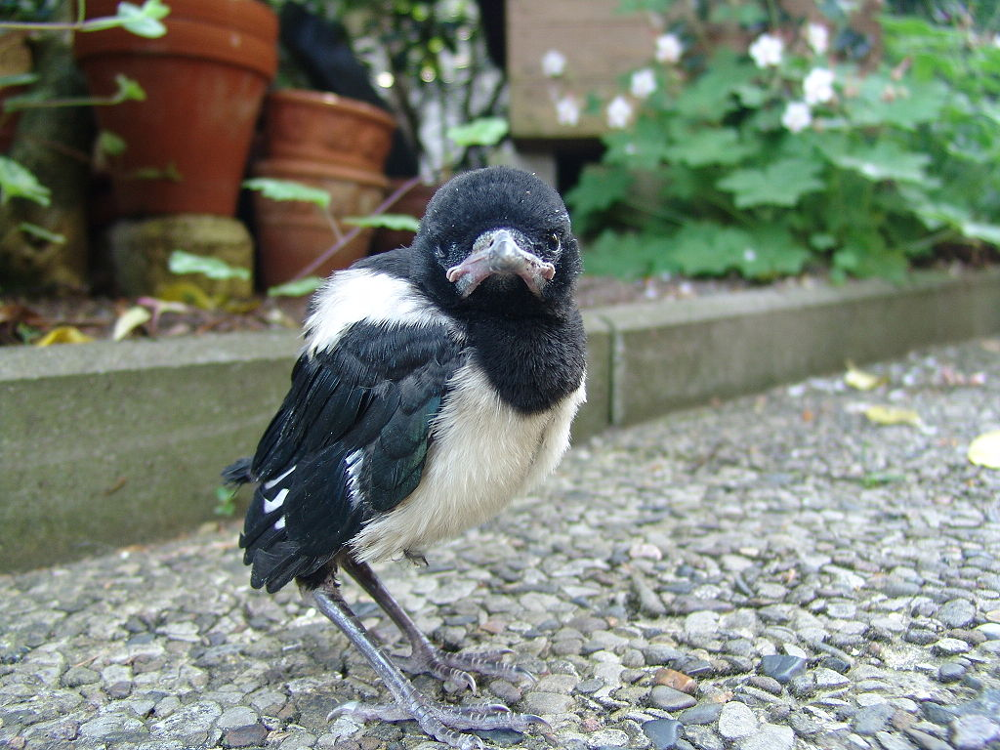

까치 세계에도 주택난으로 인한 비혼주의가 있다 ??
게시: 2020-04-30T06:30:39+09:00
최근 재택 중에 창 밖을 내려다보니 나무가지에 까치 한쌍이 집을 짓고 있더군요. 그걸 보니 문득 궁금해졌습니다. "까치들은 저렇게 짝을 이루면 그 짝이 평생 갈까, 아니면 새끼들을 키워내고 해가 바뀌면 헤어졌다가 새로운 짝을 만날까 ?" 그래서 찾아보았습니다.

1. 까치는 일부일처제 아, 왠지 좀 흐믓하고 위안이 되지 않습니까 ? 까치는 한번 짝을 이루면 보통 죽을 때까지 함께 다니며 함께 새끼를 키웁니다. 제가 10분 동안 직접 관찰을 해보니 주로 한마리가 잔가지 등의 재료를 가져오고 다른 한마리가 부지런히 집을 만들더군요. 알은 한번에 5~6개를 낳는데, 육아는 암컷 담당인 것이 여기서도 적용되어 암컷이 18일 정도 둥지를 떠나지 않고 알을 품습니다. 이때 수컷은 밖에서 부지런히 먹이를 가져와 암컷을 먹입니다. 어쩌면 전통적인 남녀관을 가진 분들은 '거봐라 남자가 밖에서 돈을 벌고 여자가 집에서 애를 보는 것이 자연의 섭리이다' 라고 말씀하실지 모르겠으나, 그건 알을 품을 때까지만 그렇습니다. 일단 새끼들이 부화되어 나오면 그 다음부터는 암수 모두가 밖에 나가서 먹이를 잡아다 새끼들을 먹입니다.

2. 혹시 도중에 둘 중 한마리가 죽으면 남은 까치는 수절하는가 ? 여기에 대해서는 별다른 연구 결과가 없는 모양입니다. 그런데 없을 만도 합니다. 생각보다 까치의 야생에서의 수명이 그리 길지가 않기 때문입니다. 최대 21세까지 산 까치가 관측된 적도 있습니다만, 일반적으로 야생 까치의 평균 나이는 3.7세에 불과합니다. 간혹 1년된 어린 까치도 짝짓기를 하기도 합니다만, 까치는 보통 2년차부터 짝짓기를 합니다. 따라서 보통 까치 커플은 2살과 3살 때, 그러니까 2번 함께 새끼를 낳아 키운 뒤 4번째 맞는 겨울에 죽는 셈입니다. 슬프지요 ? 사람의 인생도 긴 것 같지만 살아보면 짧습니다. 매일매일을 즐겁고 의미있게 삽시다.

(이 그림에서처럼 까치는 반짝이는 물건을 좋아해서 장신구나 쇳조각 같은 것을 둥지에 물어온다고 하지요. 그러나 실제로 그런 사례가 보고된 바는 의외로 또 없다고 하네요. 그래서 사진은 없고 이렇게 그림만 있나 봅니다.)
3. 비혼주의 까치와 부동산 문제 이렇게 보통 함께 새끼를 키우는 기간이 2회 정도로 수명이 짧기 때문에 과부 홀아비 까치들끼리 재혼하는 일이 벌어지는 지는 뚜렷하게 밝혀진 것이 없습니다. 그런데, 의외로 노총각 노처녀 까치들은 꽤 많은 모양입니다. 새들이 우는 이유는 짝을 찾기 때문, 즉 외로와서 운다고 알고 있었는데 비혼주의 까치들이라니 놀랍지 않습니까 ? 그런데 이 부분도 의외로 인간과 닮았습니다. 요즘 젊은이들 중에 비혼주의가 확산되는 것이 '주택 가격이 너무 올라서' '취직이 안되서' 라고 하지요. 까치가 비혼주의가 되는 이유도 이와 비슷합니다. 까치는 자기 영역을 확보하고 텃세를 부리는 새입니다. 새끼를 키우는 까치의 영역권은 보통 5 헥타아르, 그러니까 5만 평방 미터입니다. 가로 세로 100미터 씩의 운동장 5개를 합쳐 놓은 넓이를 생각하시면 됩니다. 그 정도의 영역이 있어야 새끼들을 먹일 수 있는 것이지요. 그러니까 그런 영역을 확보하는데 실패한 까치들은 결혼해서 집을 짓고 새끼를 키울 수가 없는 것입니다. 사람과 너무 비슷해서 이 부분은 소름이 끼칩니다. 그런데 까치 중 몇 퍼센트 정도가 이렇게 비혼주의 까치가 될까요 ? 집 지을 환경과 먹잇감의 충분한가 여부에 달려 있습니다만, 그런 환경에 따라 25~60% 사이의 까치가 새끼를 키우지 않습니다. 이런 까치들은 영역 확보를 하지 않고 집도 짓지 않으며 그냥 몰려 삽니다. 그리고 그런 non-breeding 까치들 사이에서 짝짓기를 하기도 한답니다. 일종의 DINK (Double Income No Kid) 족인 셈입니다. 이런 부분도 사람과 너무 비슷하네요. 슬프지요 ?

(새끼 까치에요. 새끼들은 언제나 모두 귀엽네요. "야, 너 우리 아빠가 누군지 알아 ??")
4. 혹시 새끼들에게 영역을 세습하기도 할까 ? 인간과 이렇게 비슷하니 혹시 인간처럼 확보한 영역과 둥지를 물려주기도 할까 싶습니다만, 거기에 대해서도 따로 연구된 바는 없습니다. 다만 까치들은 신축보다는 재건축을 좋아해서, 완전히 새로운 나무가지에 새로운 둥지를 트는 것 보다는 기존의 낡은 둥지를 기반으로 재건축을 하는 경우가 많답니다. 이는 어떻게 보면 당연한 것이, 작년에 성공적으로 새끼들을 키워낸 곳이라면 안전이나 먹이 확보에 좋은 지점이니 올해도 그럴 가능성이 많기 떄문입니다. 다만 까치는 그리 오래 사는 새가 아니므로, 젊고 억센 까치 커플에게 영역과 옛 둥지자리를 빼앗기는 일도 있을 것 같습니다. 그럼 새끼들에게 둥지와 영역은 못 물려주는 대신 언제까지 보살펴줄까요 ? 알에서 깨어난 새끼들은 보통 4주간 둥지에서 엄마아빠가 물어다주는 먹이를 먹으며 깃털을 키웁니다. 4주가 지난 뒤에는 깃털이 다 자라 날 수 있게 되는데, 그러면 둥지 밖으로 나옵니다. 그런데 그렇게 다 큰 새끼들은 둥지 밖으로 나온 뒤에도 4주 정도 더 엄마아빠에게 먹을 것을 받아 먹으며 보호를 받습니다. 아직 어려서 비행과 먹이 구하는 것에 익숙하지 않기 때문입니다. 그러니까 7월~8월 정도에 까치 둥지 근처에 까치들 여러마리가 나란히 앉아있는 것을 보면 얘들은 엄마아빠 형제자매라고 생각하시면 되겠습니다. 그러나 까치의 삶은 매우 곤궁합니다. 일단 낳은 알 5~6개 중에서 마지막에 낳은 알에서 나온 새끼는 거의 언제나 죽습니다. 먹이가 부족해서 굶어죽는 것입니다. 성체로 자란 새끼들, 그러니까 1년차 까치는 고작 20% 정도만 첫 겨울을 견디고 살아남습니다. 역시 겨울에는 먹을 것이 부족해서입니다. 2년차 까치는 70% 정도가 겨울을 견디고 살아남습니다. 비둘기나 까치나 모두 도시에서도 흔히 보는 새입니다만, 비둘기와는 달리 까치가 유해조수로 지정되지 않는 이유가 다 있습니다. 저렇게 사는 것이 척박하기 때문에 까치는 숫자가 마구 불어나지 않기 때문입니다. 우리 조상들이 감나무에서 감을 딸 때 마지막 1~2개는 남겨두면서 '저건 까치밥이다' 라고 하는 이유가 더 있더라고요.
5. 까치도 부부싸움을 할까요 ?
아, 이건 정말 모르겠습니다. 관련 정보는 찾지 못했어요. 그런데 안 할 것 같습니다. 삶이 척박하기 때문에 생존과 번식 자체가 어려운데, 설마 그 사이에 둘 중 하나가 바람을 피우겠어요, 도박을 하겠어요 ? 그리고 암컷이든 수컷이든 게으름을 피워서 먹을 것을 못 구해온다고 구박을 받지는 않을 것 같아요. 위에서도 언급했듯이, 생존 자체가 어렵거든요. 어려울 수록 서로 돕고 살아야 합니다. 그러지 않으면 생존과 번식 자체가 안 됩니다. 이렇게 척박한 환경 속에서도 까치가 멸종되지 않은 것을 보면, 까치들은 잘 하고 있는 것 같습니다. 우리 인간들도 잘 해야겠습니다.
Source : https://www.rspb.org.uk/birds-and-wildlife/wildlife-guides/bird-a-z/magpie/life-cycle/ https://en.wikipedia.org/wiki/Eurasian_magpie https://www.wildlifegarden.co.uk/living-garden/bird-school/magpie.html
--------------------
덧붙여서, 제 페이스북 친구분 중 한분이 달아주신 댓글 내용입니다.
우선 큰 나무의 꺼치집을 관찰해 보시길 ... 까치는 운동장 5개 면적을 혼자(부부) 점유 하는 경유도 있지만... 큰 나무 하나에 여러채의 까치집이 있는 경우는 뭘까요? 큰 나무에 여러개의 까치집이 있는 경우... 가장 큰게 가장 나이가 많은 녀석 이랍니다 해마다 조금씩 증축을 하거든요. 그리고 까치들 중 일정 숫자는 결혼을 하지 않습니다. 그런데 그들도 새끼는 끼웁니다... 바로 조카를 함께 돌보거나 동생을 돌보는 거죠. 조카를 돌보는 경우 내 유전자의 성공 가능성이 불확실한 1/2 대신 확실한 1/4을 키우자는 전략으로 알려지고 있습니다